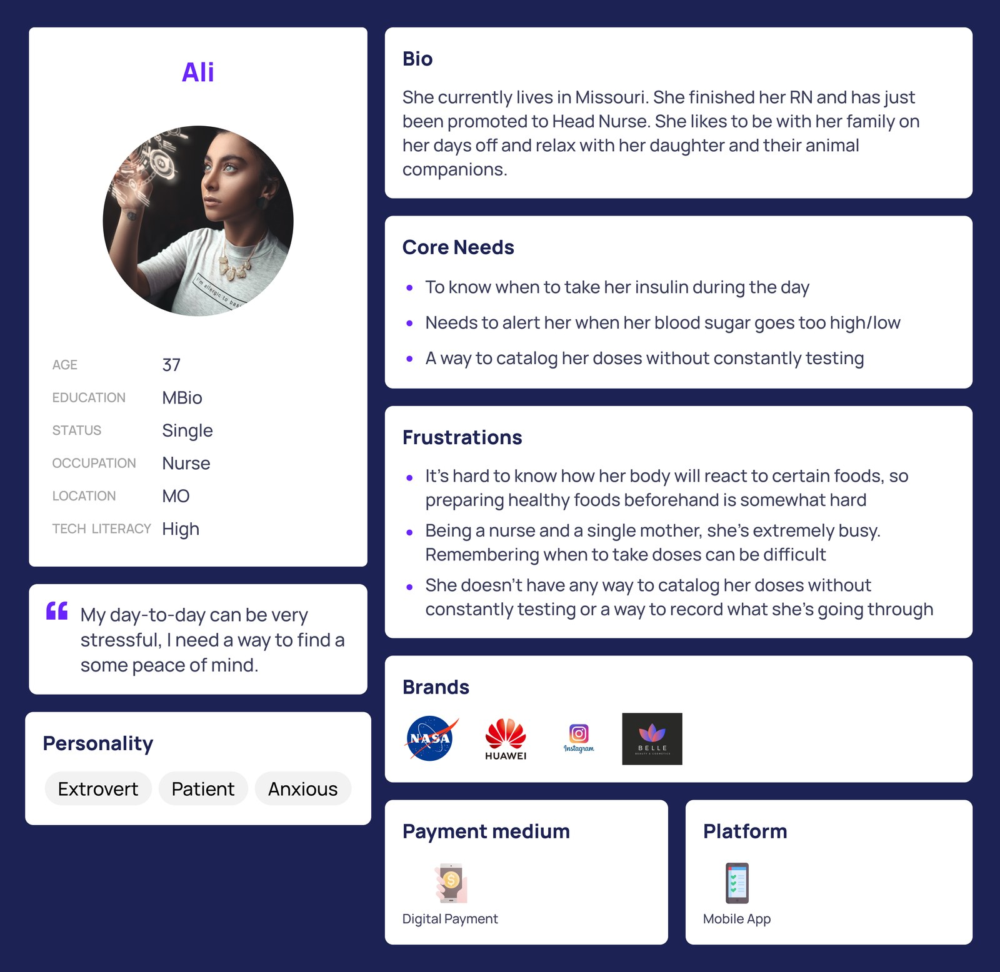
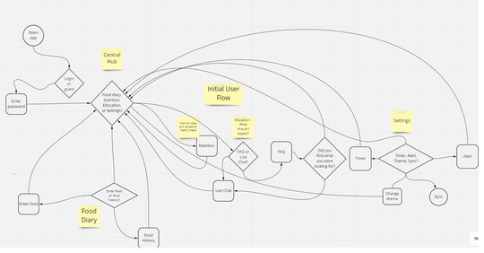
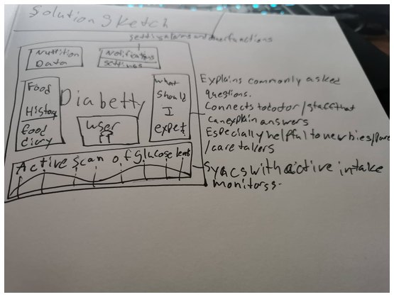
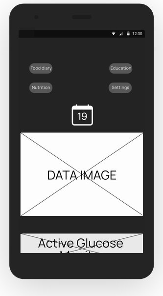
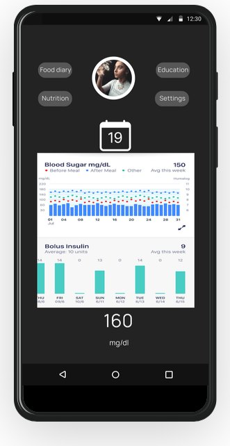
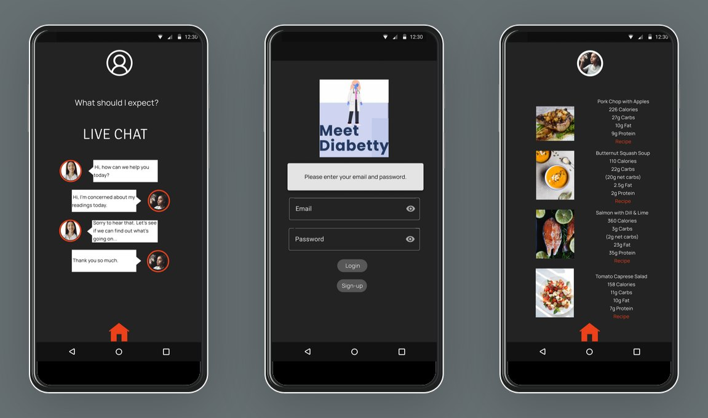
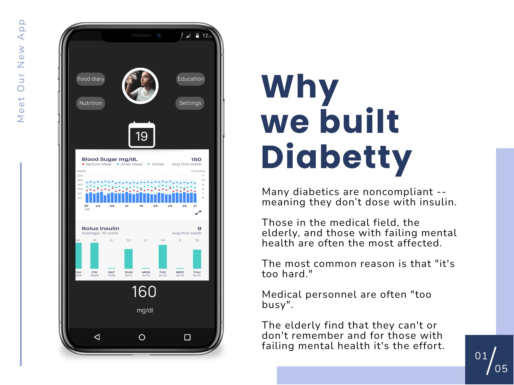
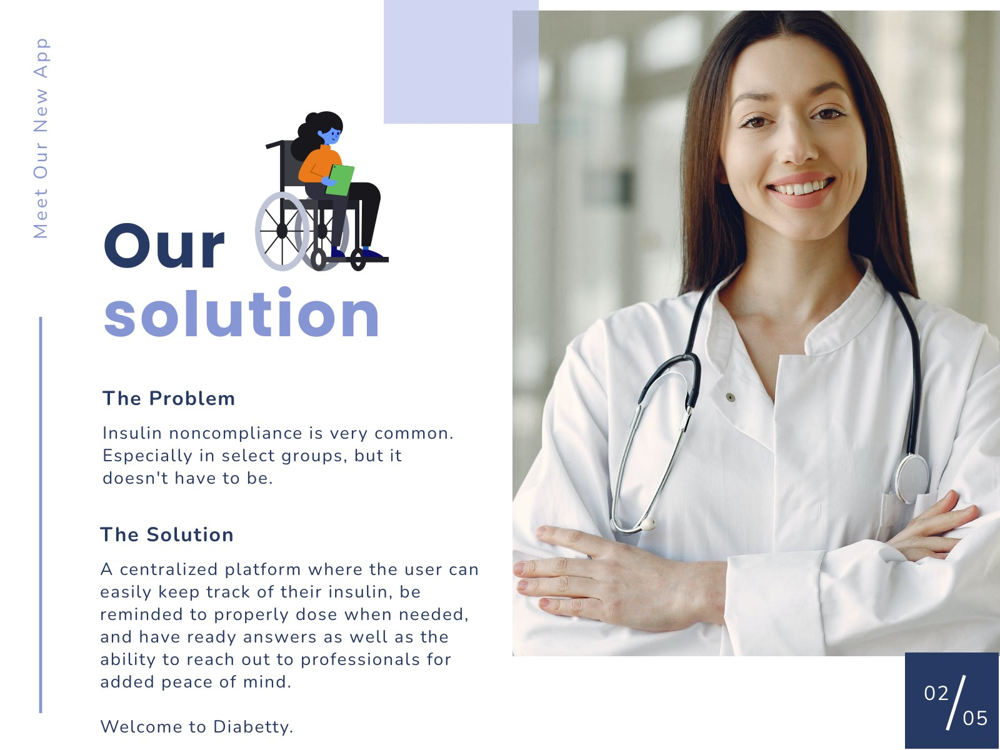

Diabetty
A diabetic maintenance app that supports both diabetic and caretaker alike, with a toolkit that aids in the support and maintenance of compliance, as well as a connection to medical advice and personnel if needed.
- Role
- UX designer: visual design, UX research, analysis, information architecture, prototyping, interaction, and usability testing
- Project
- 5-day design sprint, UX/UI bootcamp
- Tools
- Figma, Material Design, Piktochart
- Audience
- People with diabetes, and parents or caretakers of those who are noncompliant

Where it started
Diabetty came out of a 5-day design sprint in our workshop. When speaking with a client, a nurse in Kansas living with diabetes, I asked her what app she'd like to see in the world.
Her answer turned into Diabetty, an app to help her and others like her manage their noncompliance with diabetes.
The problem
According to the World Health Organization (WHO), approximately 125,000 people with treatable ailments die each year in the United States because they do not take their medication properly.
The WHO also reports that 10 to 25% of hospital and nursing home admissions result from patient noncompliance. Furthermore, about 50% of prescriptions filled for chronic diseases in developed countries are not taken correctly, and as many as 40% of patients do not adhere to their treatment regimens.
Diabetics who are noncompliant (those who refuse to follow a doctor's prescribed instructions) do not realize or accept that proper self-care will have a positive effect in the long term. As a result, they are in danger of developing complications that affect the eyes, kidneys, heart, nerves, feet, and more. Over time, uncontrolled diabetes can lead to permanent damage to these areas, as well as stroke, heart disease, and blindness.
People are often noncompliant due to denial, high costs, fear of needles, difficulty of use, unpleasant outcomes, lack of trust, apathy, or simply previous experiences.
Those in the medical field, the elderly, and those with failing mental health are often the most at risk. The most common reason stated is "it's too hard." When pressed for underlying reasons, medical personnel say they're "too busy," the elderly often can't or don't remember (with a slight percentage of denial), and for those with failing mental health, it's the effort.
The solution
Diabetty is a centralized platform that aims to build trust through its ease of use and simple, engaging features. Users can easily track their food intake and insulin, get reminders to properly dose when needed, and find answers to popular questions and nutritional data, in addition to reaching out to professionals for added peace of mind.
Two sides of our marketplace
- The noncompliant: the tools to help the user be more compliant and better their health in the long term
- The caretaker: the aid and information to ease the minds of those caring for others who have diabetes but are often willful or noncompliant
Research and discovery
Survey responders who either have diabetes or are the parent or caretaker of someone with diabetes, and are noncompliant
- Don't keep up with their recommended diet
- 83%
- Report being busy or inconvenienced
- 75%
- Work in a medical field
- 83%
- Use an app to manage their diabetes
- 75%
3 main frustrations those with diabetes have
- Busy schedule
- 75%
- Trouble with memory
- 92%
- Don't keep up with their recommended diet
- 83%
Empathy map
The persona
Based on the interview, we developed a persona using the data from our research and the interview with the client. We referred to it throughout the entire product development process, and it was most helpful during both the initial and the final design of the application.
We really wanted to convey the type of person Ali is: her core needs, her pain points, and so forth.
Using the persona and user interviews, we redesigned some features, in particular the alerts and the food diary, and the personnel connection went from video chat to a simple chat room.
The presentation was ultimately shown to the client on a carefully prepared slide deck.

Keeping things simple
We created a centralized hub for ease of use.

Sketches
This sketch helped iron out a look for what the app needed and a baseline for the UI. As this was a sprint, it was the main solution used, though about five other sketches were used to ideate.
The main reason for the sketch was to flesh out what the final application UI might look like.

Wireframes
At the beginning of my design process, I created low-fidelity wireframes for testing.
I made both low-fidelity and high-fidelity wireframes in Figma, and lo-fi can really help flesh out initial ideas and show how those ideas work together. Both were used for user testing, because if the flow isn't clear in lo-fi, it's going to be a mess at higher fidelity.

UI design
Once I had tested out the usability mistakes, I started designing the final screens in Figma, using some Material Design. I tend to go toward a darker visual style for accessibility reasons.


Interactive prototype
From the pitch deck


Final thoughts
- Don't fall in love with your first idea.
- Users often have the answer; you just need to pay close attention.
- You're not going to get it right on the first try.
“This is success. This is what success looks like.”